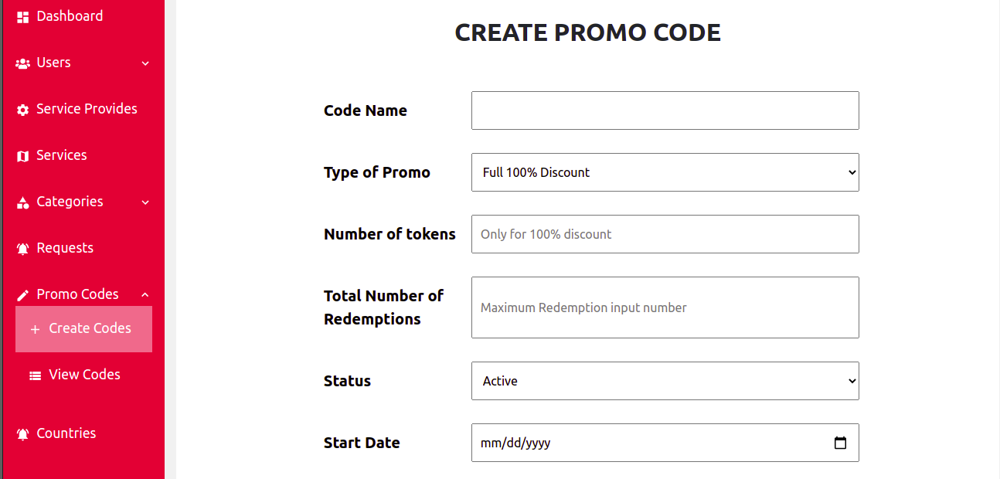
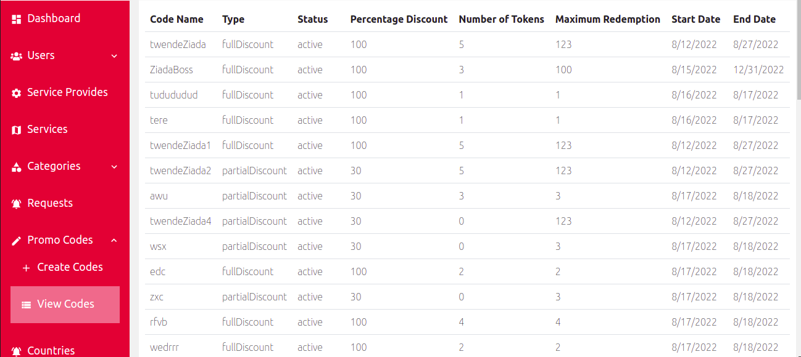
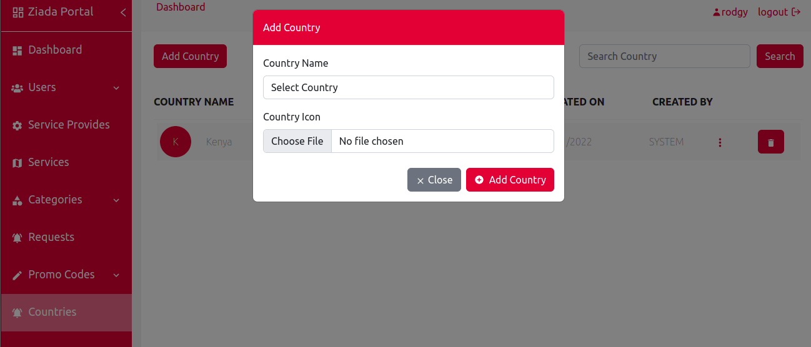

Promo Codes
Under promo codes we have a page for creating the promo codes and a page for viewing the promo codes
Create promo code
1. On create promo code page you will be able to create a promo code by entering the code name, types of the promo code, number of tokens, total number of reedemption,status, start date and the end date

View codes
2. On the view codes pages, it shows all the created promo codes that are available in the portal

Countries
3. On the countries page it shows all the available countries, a button for adding a new country, a seach button for searching the available countries, a button for deleting and an option for editing the country detail
